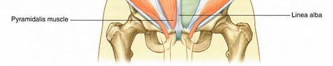

Anterior Abdominal Wall: Lab 4 - Page 2 of 6
| Add the internal oblique. | |
| Note that the contination of the inferior oblique forms the cremasteric fascia. Use the Highlight tool to identify this part of the internal oblique muscle. |
In the MPR window, note that the aponeurosis of the internal oblique joins the aponeurosis of the transverses abdominus to encase the rectus abdominus.
| Add the external oblique. |
Note that the inferior border of the external oblique forms the inguinal ligament.
Anterior wall of rectus sheath is formed by all three of the aponeuroses and join at the midline as the linea alba.
| Find the inguinal ligament using the Highlight tool. |
| Add the linea alba. |
For completeness note the location of the pyramidalis muscle. This muscle is not identified on the virtual cadaver, but plays an important role in the surgery occuring in the suprapubic area.
